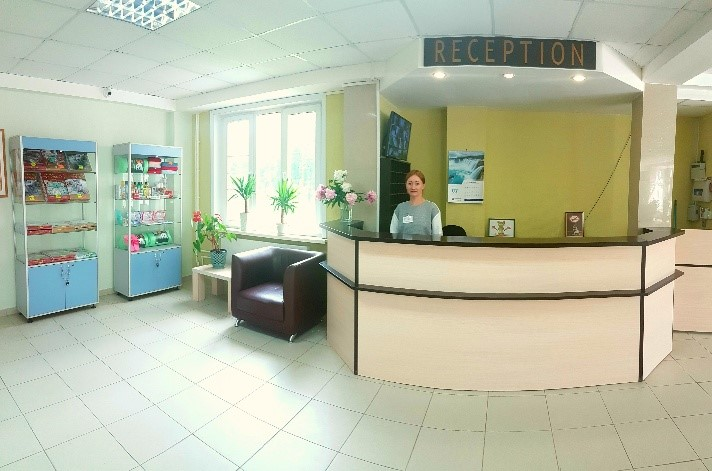
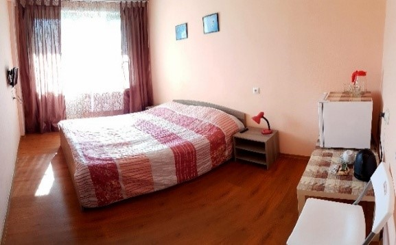
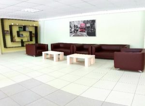
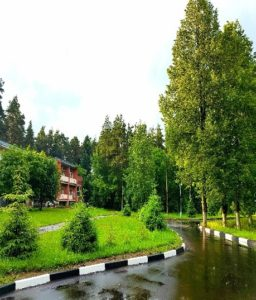
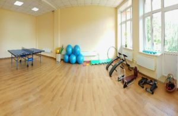

Санаторий-профилакторий "Серебряный родник"
Телефон: 8 (4964) 11-68-82 

Телефон: 8 (4964) 11-68-82
Санаторий «Серебряный родник» был открыт в 1989 году. Здравница располагает двухэтажным корпусом, где представлены номера нескольких категорий. Все службы санатория находятся в одном корпусе: лечебное отделение, столовая, бассейн, номера для проживания. Лечебная база ориентирована на оздоровительное лечение и профилактические мероприятия. Новая мебель и отремонтированные комнаты порадуют вас своим домашним уютом и комфортом.
В санатории ежедневно работает высококвалифицированный медицинский персонал, который предлагает консультации специалистов:
Номерной фонд санатория состоит из одноместных и двухместных номеров. В каждом номере имеется телевизор, холодильник, балкон, санузел и душ. На каждом этаже оборудован холл. Территория санатория ограждена и ведется круглосуточное видеонаблюдение, освещение в ночное время суток.
  В санатории «Серебряный родник» 5-ти разовое питание согласно утвержденному заказному меню. Ежедневно к столу подаются овощи и фрукты, соответствующие сезону. В меню включаются молочные продукты, рыбные блюда, десерты, соки и витаминные напитки. Для пациентов с сахарным диабетом предусмотрен диетический стол.
В инфраструктуру комплекса входят: конференц-зал, библиотека, сауна, крытый бассейн, автостоянка, прогулочные аллеи. Спортивная площадка и прокат инвентаря для занятий, зал для занятий аэробикой, настольный теннис и др. В зимнее время прокладываются лыжные маршруты. В санатории работает магазин с предметами первой необходимости. В пешей доступности расположен продуктовый магазин.
 